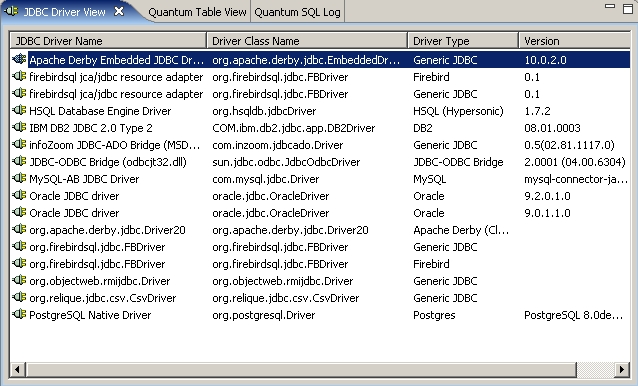

The driver view just lists the available JDBC drivers in Quantum, drivers that you have yourself selected. Hitting the Delete key will delete the driver if it's not used in any bookmark, same functionality as clicking the Delete driver button in the JDBC driver selection dialog from the New Bookmark Wizard.
